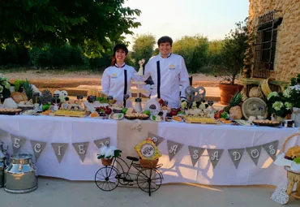
Mesas de quesos para eventos
Para bodas, comuniones, bautizos y cumpleaños, también en fincas privadas. Causa sensación.
Pedir presupuesto →Hasta 100 quesos de España y de fuera, al aire y no tras una vitrina, para que los pruebes antes de elegir. Te cortamos lo que necesites y, si no puedes pasar ahora, lo reservas y lo recoges cuando quieras.


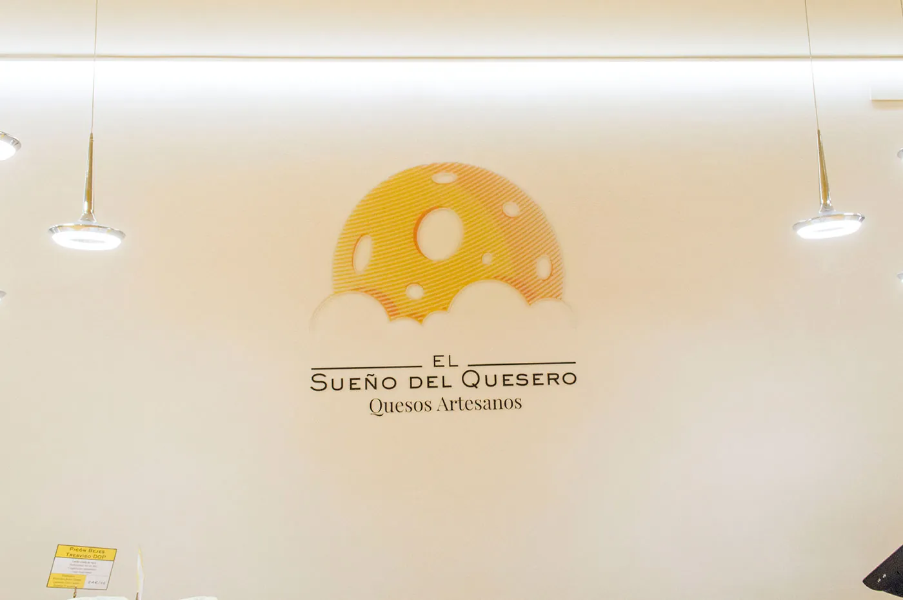
Recreamos las condiciones de una cámara de maduración para que los quesos estén siempre en su punto. Por eso están en el mostrador y no tras una vitrina: los ves, los hueles y los pruebas.
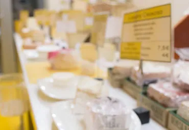
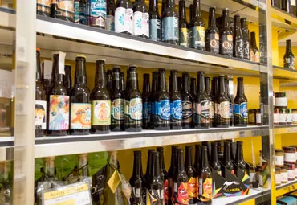
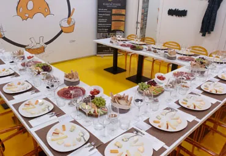
Una selección de la tienda con foto, productor y curación. Añade lo que quieras y te lo dejamos cortado y envasado para cuando pases.
Precios por kilo de su web actual, orientativos. Al corte se reserva por gramos y se paga al recoger.
Cuando estamos cortando queso o la tienda está cerrada, Laura coge el teléfono. Conoce los quesos, recomienda, apunta la reserva y os la pasa al momento.

Para bodas, comuniones, bautizos y cumpleaños, también en fincas privadas. Causa sensación.
Pedir presupuesto →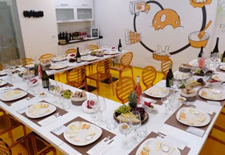
Algunos de los mejores quesos nacionales e internacionales y las nociones para disfrutarlos. Reserva la sala para una cata-cumpleaños o una degustación privada.
Reservar la sala →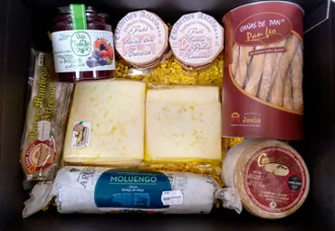
Surtido personalizado en productos e importe, con envío refrigerado a toda la península.
Montar una caja →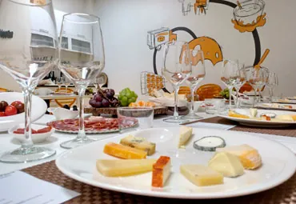
Asesoramiento gastronómico y de maridaje para restaurantes, bares, catering y empresas.
Hablar con Juanra →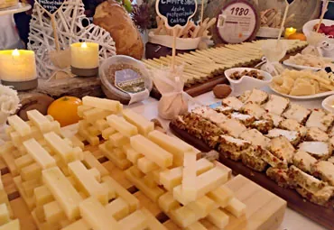
Varias veces al año, maestros queseros, enólogos y cerveceros os cuentan sus elaboraciones en la tienda.
Ver la próxima en Instagram →
«Es el sueño de tres: del artesano que elabora con mimo un queso con personalidad, del quesero que lo da a conocer y del cliente, catador y juez supremo.»
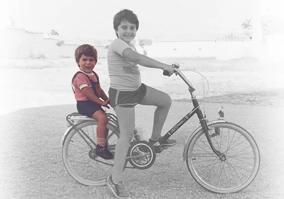
De niño pasó largas temporadas en la aldea de Santa Marta, en Albacete. Ingeniero industrial y amante del queso de siempre, un día este «pequeño ratoncillo» quiso vivir en su propio paraíso. En 2020 fue elegido Mejor Cheesemonger de España.
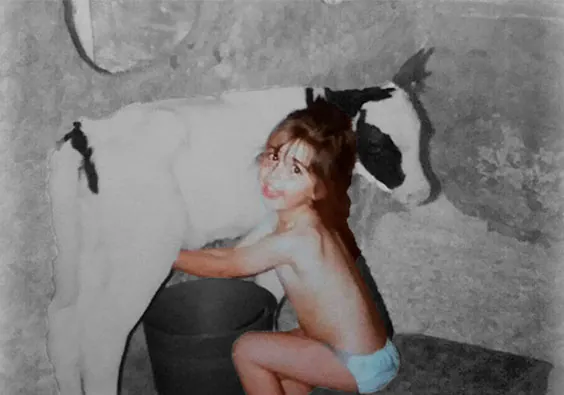
Maestra vocacional, se crió en el campo y ordeñaba las vacas de la vaquería de su abuela. Nunca pensó que la leche que llenaba su cántaro a los cuatro años sería un día su modo de vida. ¿Cómo llegó aquí? El amor.
Y si no está aquí, escríbenos por WhatsApp o llama: Laura te atiende a cualquier hora.
Sí. Los quesos están en el mostrador, no tras una vitrina, y puedes probarlos antes de decidir cuál se ajusta a tu gusto.
Sí, porcionamos el queso según lo que necesite cada persona o familia. En la web puedes reservar desde 150 g.
Añade los quesos en esta web, por WhatsApp o llamando por teléfono. Eliges la hora de recogida y te lo dejamos cortado y envasado en Calle Rosario, 58.
Sí. Preparamos una caja regalo personalizada en productos e importe y la enviamos con una empresa de transporte refrigerado, para que llegue en óptimas condiciones.
Sí, para una cata-cumpleaños o una degustación privada con familia, amigos o empresa.
Pregúntanos en tienda, por WhatsApp o por teléfono: te contesta una persona del equipo con la información de cada queso.
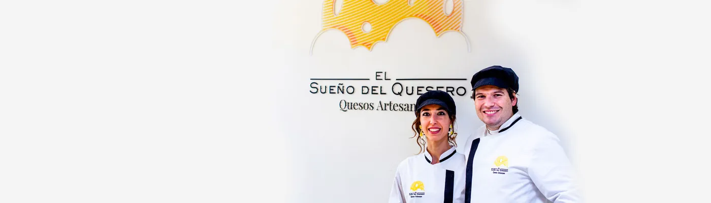
Maqueta de la web nueva preparada por Altera con los textos, fotos y quesos de su web actual · Ver propuesta · Ver demo